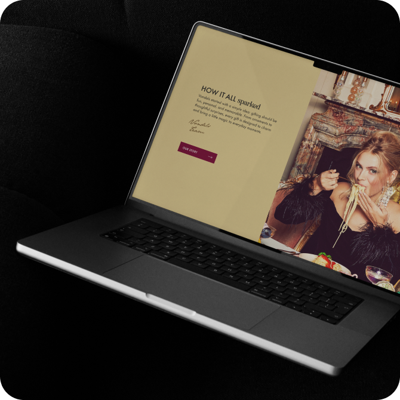
Vondels was running three separate online stores, creating confusion for wholesale buyers and constant technical work. Customers had to manually choose which store to enter each session, switching between preorder and current stock.
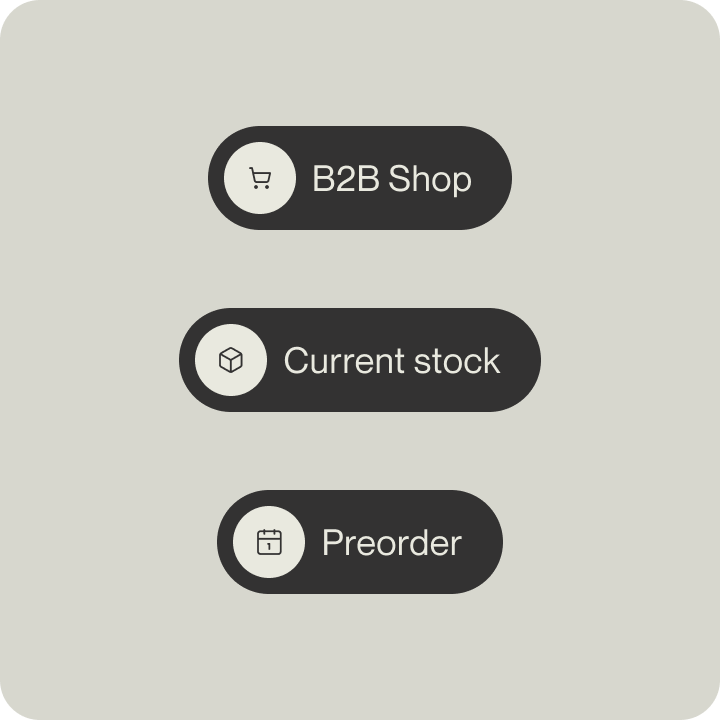
Key Insights:
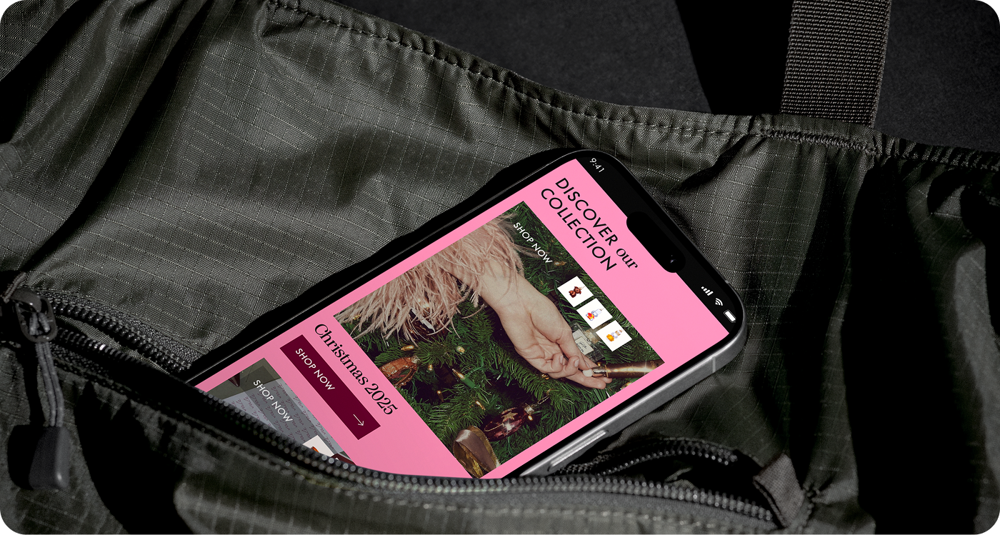
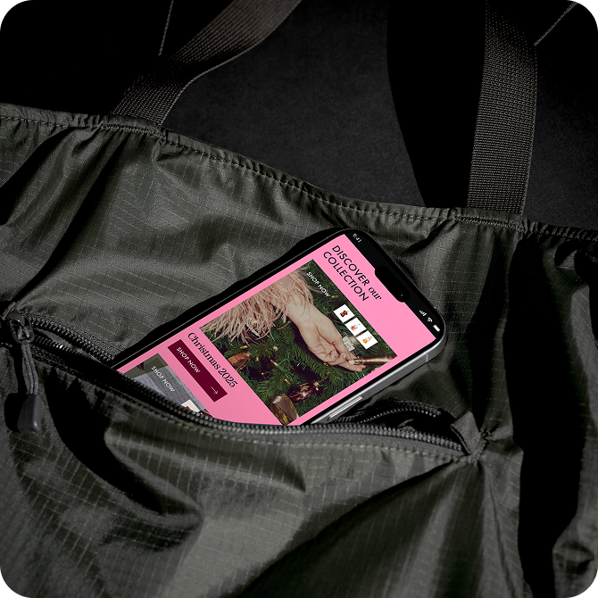
As Vondels operated separate stores for current stock and preorders, the research focused on understanding how wholesale buyers navigate between different purchasing needs. The findings informed a unified store structure that makes both order types visible without combining their fulfilment processes.
Activities:
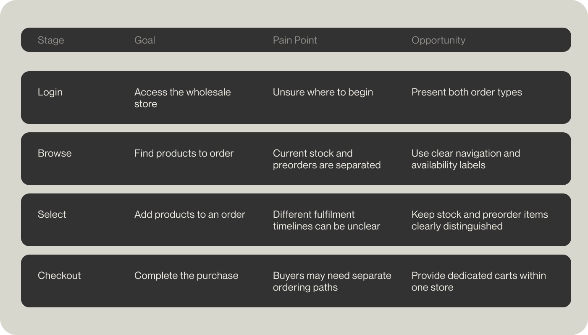
Key Insights:
The focus was on making the catalogue easier to scan, helping buyers understand product availability, and creating a more direct path from browsing to ordering.
UX Objectives:
The ideation phase explored different ways to organise the wholesale shopping experience. The concepts focused on helping buyers move through the catalogue efficiently while keeping product availability and ordering options easy to understand.
Moodboard:
Three visual directions explored how the website could balance Vondels’ playful product world with a clear wholesale experience: a structured and minimal route, a bold and expressive route, and a more refined editorial route. The selected direction combined clear layouts with a distinctive, energetic visual character.
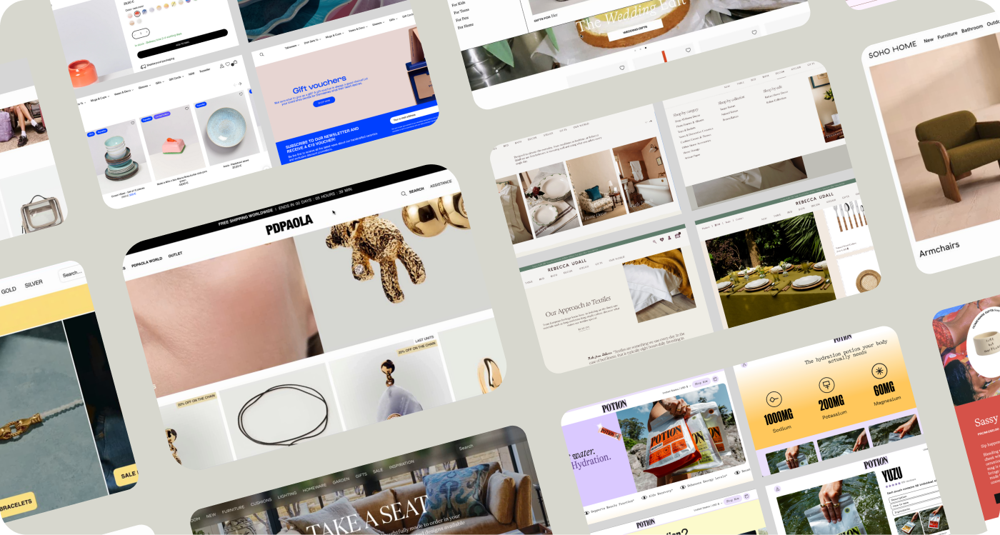
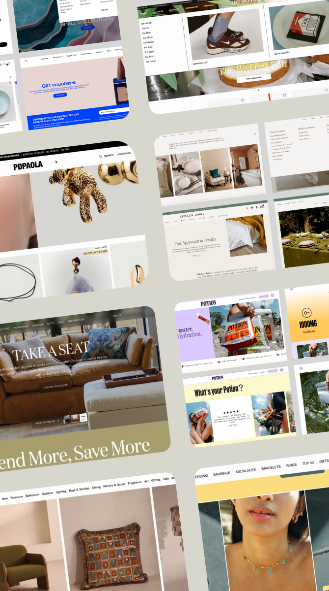
Sitemap:
The original sitemap separated the B2C experience from the B2B journey, with wholesale customers choosing between different ordering environments. The updated structure brings the B2B experience into a clearer system, separating direct orders, preorders, and supporting categories such as homeware, gift packaging, and in-store displays. This makes the website easier to navigate while giving each product group a more defined place within the overall structure.
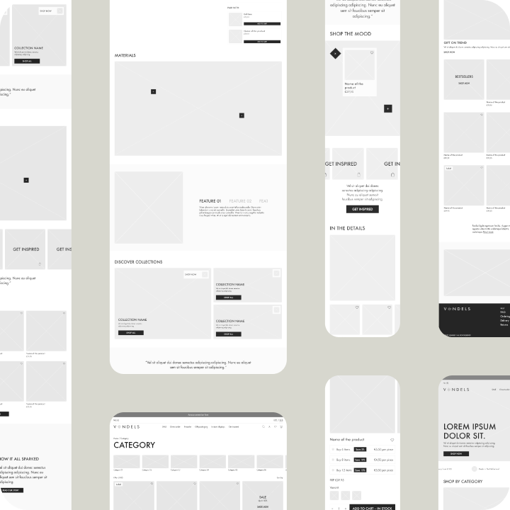
Wireframes:
Wireframes translated the navigation plan into page-level flows. They established the placement of key information, collection entry points, and ordering actions before visual styling was applied.
Design:
The final interface combines a playful, seasonal aesthetic with a practical e-commerce
structure. A soft blush base, deep burgundy accents, and bold product photography create a
warm, celebratory visual system. A refined display typeface is paired with a clean
sans-serif for supporting information, adding personality to campaign moments while keeping
navigation, prices, and product details easy to read.
Clear navigation, spacious layouts, and structured product grids keep the experience easy to
scan. Prominent product imagery, prices, and add-to-bag actions help users move quickly from
browsing a collection to selecting an item.
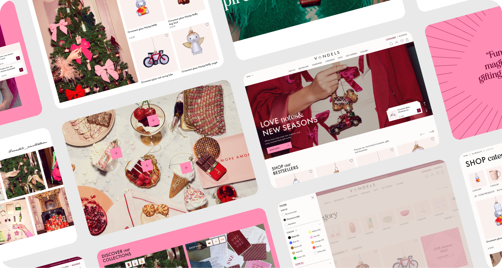
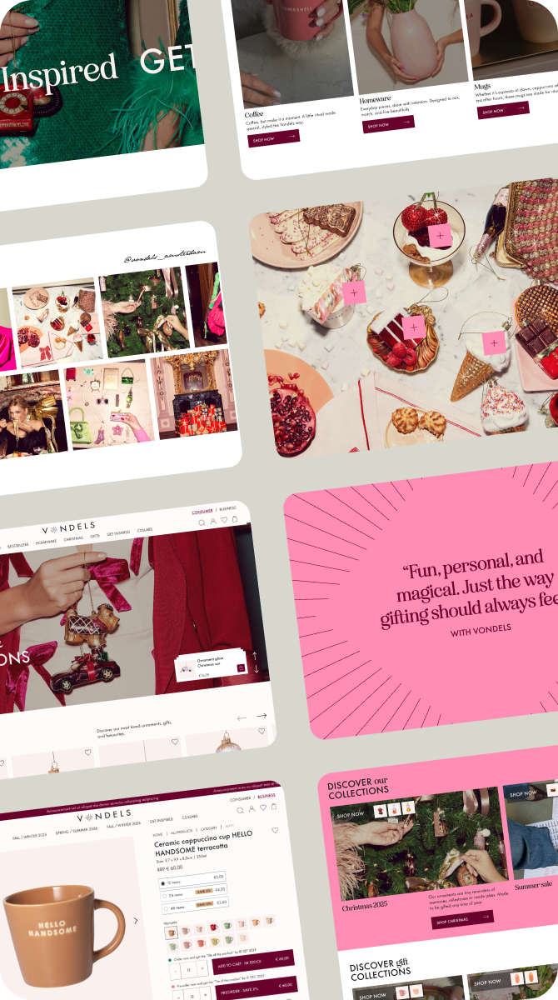
Mobile was treated as the primary design context rather than a reduced desktop version. The
interface was built around the essential actions in the purchase journey, using a focused
single-column hierarchy, progressive disclosure, and thumb-reachable controls.
The system then expands for larger screens, introducing more browsing space and denser
product layouts while retaining the same prioritised flow and interaction logic.
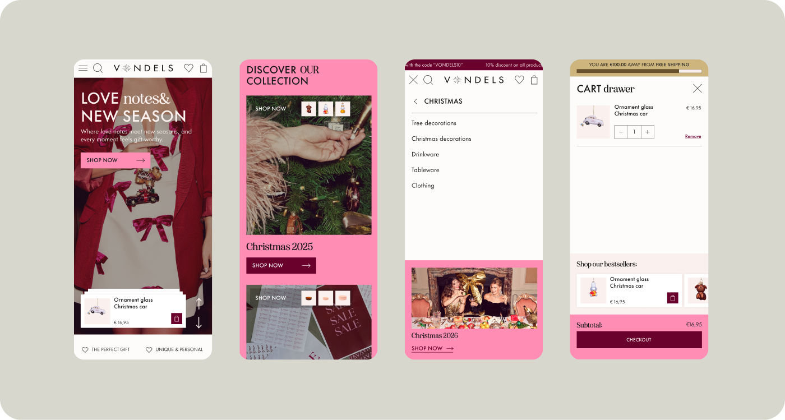
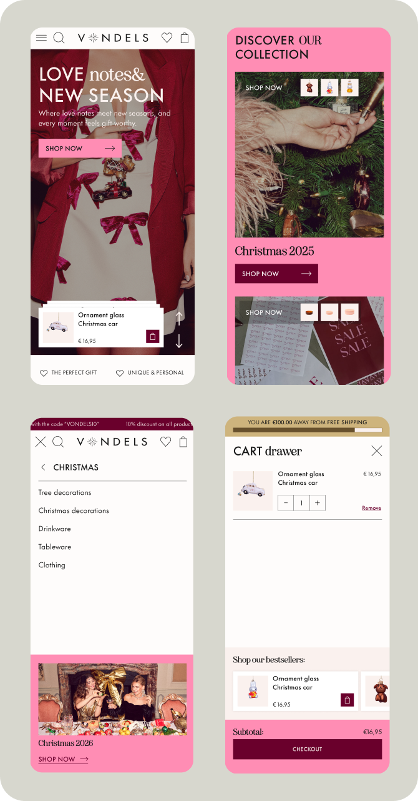
Validation focused on reviewing the proposed experience against the practical needs of
Vondels’ B2B catalogue. Key screens and ordering scenarios were assessed to identify unclear
labels, gaps in navigation, and friction between product discovery and purchase.
Feedback from these reviews was used to refine the information hierarchy, clarify the
distinction between direct orders and preorders, and ensure that the final layouts remained
consistent across desktop and mobile.
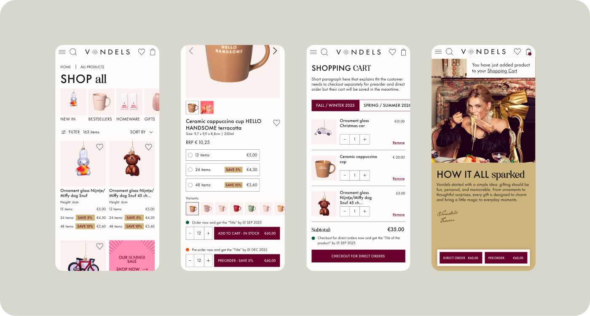
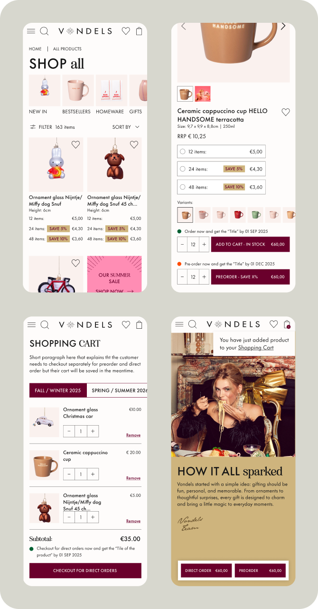
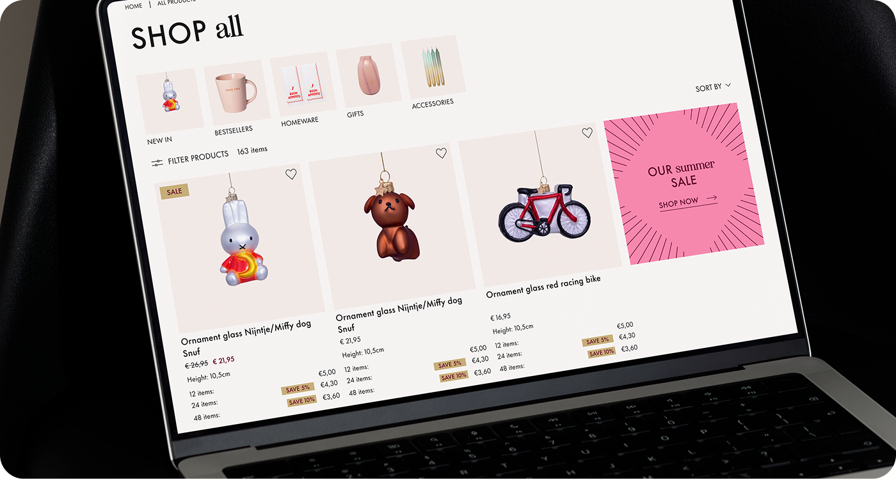
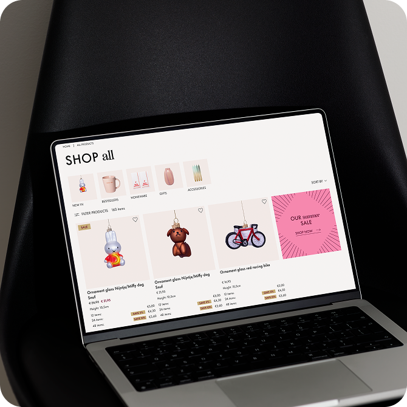
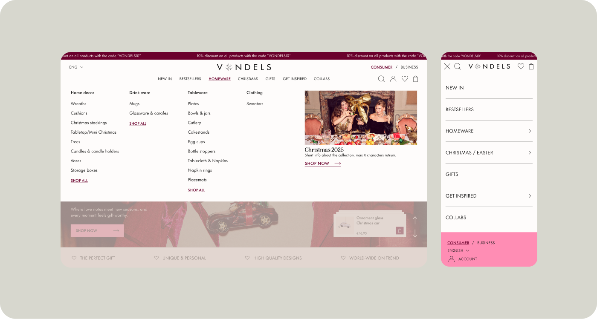
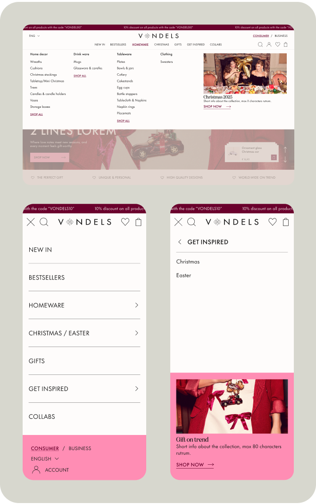
The approved designs were translated into a responsive component system and applied across the core B2C and B2B journeys. Shared patterns, such as navigation, product cards, filters, product details, and cart interactions, created a consistent experience while allowing each audience to access the content and ordering options relevant to them.
The redesigned B2B experience created a clearer route from product discovery to ordering, helping wholesale buyers access relevant collections with less friction. Following launch, Vondels recorded a 14% year-over-year increase in B2B revenue. The project established a more scalable e-commerce foundation while retaining the brand’s expressive visual character across customer touchpoints.